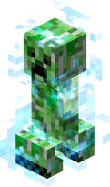

Bienvenidos a la pagina oficial del clan Charged
En esta pagina podras encontrar informacion sobre el clan, sus miembros, sus aliados, sus neutrales y sus enemigos

Esto es un servidor de minecraft, si quieres entrar te dejo la IP a mano
IP: volatik.net
Descripcion: Cjunus es un hacker experimentado que juega desde hace mucho tiempo, usa multicuentas diferentes como Unus, TanatoFobia, Spookysares y demás
Funcion: Co-Lider del clan Charged, bastante over-all en farmeo y pvpeo HvH
Descripcion: CryingHunter es un hacker que juega desde 2023, usa multicuentas diferentes como CryingHero, CryTontito22 y demás
Funcion: El mejor pvpeador/farmeador HvH del clan Charged
Descripcion: Natsuki3 antes llamada natasha360a es la unica jugadora de genero femenino de clan Charged, esta aprendiendo a usar hacks
Funcion: Creacion y diseños de bases, farmea items en grandes cantidades pero no se dedica al pvp (ni legit ni HvH)
Descripcion: ElCiiBa es un hacker experimentado en farmeo, usa multicuentas diferentes como Ignaciovich y TrickZ
Funcion: Farmea items en grandes cantidades pero con ayuda de los hacks, no se dedica al pvp (ni legit ni HvH)
Descripcion: gato_r3belde es el segundo miembro en entrar al clan Charged es un miembro legit, tiene una multicuenta llamada gatos_enojados
Funcion: Se puede contar con el en construir y farmear pero no a la hora de pvpear
Descripcion: EndJessKyu es el primer jugador del clan Charged, legit desde sus inicios
Funcion: Over-all en todo pero no juega HvH (ya que no utiliza hacks)
Descripcion: Music4Life99 fue por mucho tiempo el mejor usando hacks tanto en farmeo como pvpeo, usa multicuentas diferentes como Music4Life, Easylog, MataZancudos y demás
Funcion: Lider del clan STONKS, su funcion es acabar con los enemigos si se lo requiere o intercambiar items por otros items
Descripcion: Fue miembro de uno de los clanes mas peligrosos y temidos hasta que se disolvio, ahora cada tanto este pasa para saludar y recordar viejos tiempos o sino ponerse a farmear o ayudar a los nuevos jugadores
Descripcion: Es lider de uno de los clanes mas temidos en su tiempo RATAZD, esta retirado pero cuando se le indica entrar lo hace, este fue marcado como enemigo por diferentes hechos tales como:
Primer reinicio (2022): Matar al lider de Charged "CyclesOfHate", raidear al lider de Charged "CyclesOfHate", insultos a este tambien
Segundo reinicio (2023): Robar uno de los clanes de "CyclesOfHate"
Tercer reinicio (2023-2025): Raidear la base oficial "El Enfierrado" de "CyclesOfHate", insultos a este tambien